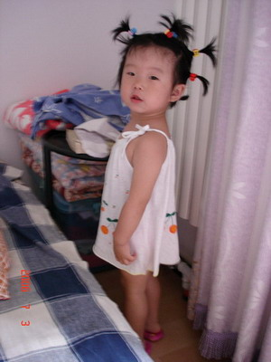
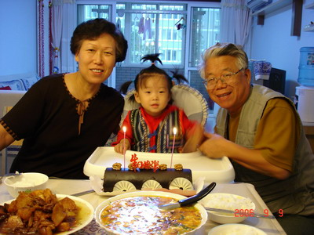

曼曼的语言能力发展的很早，不到两岁时她已经开始用长长的句子表达自己的意思，还会用很多副词，比如“火车已经走了，我没有看到”，“刚才我差点摔了”，“因为……所以……”等等。小家伙常常语出惊人，有一次我带她去商场，她突然指着内衣店的广告，奶声奶气的大声说：“妈妈你看，好多好多阿姨的肚脐呀。阿姨怎么都露着肚脐呀”。经过的路人无不笑倒。
早上起来，她自己从床上爬下来，跑到爸爸睡觉的屋子和爸爸玩。一次她进去没找到爸爸，马上跑出来大声问我：“咦，爸爸呢？”
曼曼有时候想让我陪她玩，会把其他所有人都赶走。只要她爸爸一露头，她就大叫：“爸爸走，爸爸别来”。
这段时间家里一个很大的变化就是搬进了一个新家。小家伙也有了一个十几平米的自己的房间，房间里摆放的都是她的宝贝。天气渐渐的热起来，曼曼扎了满头小辫，很快在新小区里小有名气。我带她出门散步，我谁都不认识，可是到处都有人叫着"曼曼"和她打招呼。

曼曼现在还是不会说“尿”，总是尿裤子。小家伙不知道什么时候才能在这件事上开窍。
曼曼现在脾气变得很大，动不动就跳着脚的哭，还在地上打滚，摔东西。她发脾气的时候真是令人烦恼，我和郭嘉开始和她哭闹的毛病作斗争。开始我们试图耐心的给她讲道理，后来发现在她哭闹的时候根本行不通；后来她哭闹的时候我们不理她，可是她追着我们哭得无休无止；有一次她在爷爷面前哭闹，爷爷打她屁股，当时很奏效，可是后来她爸爸打她屁股就没用了，她闹得更厉害了，而且怎么也不忍心在她每次哭闹的时候打她屁股，每次打她屁股她爸爸都会后悔好几天。最后一个比较有效的办法就是她大哭大闹的时候把她一个人关在她的房间里。她会特别厉害的哭闹一阵，等把她心里不顺的气哭出来之后会慢慢平静下来，等她哭过之后就好像什么事也没有发生一样，又变得特乖特可爱。一次她在屋子里大哭了半天，后来不哭了。我一走进去，她就好像刚才什么也没有发生过一样，抱着自己的脚奶声奶气的说“妈妈你看我的袜子，都露大脚指头了。”玩的时候又跑过来抱着我的脖子说：“我以后都不哭闹了”。但是下次闹起来一切照旧。
曼曼晚上睡觉还是不好，经常半夜醒来大哭，怎么都哄不住，一直要哭上快半个钟头才罢休，而且有时一晚上醒来2次。小时候每次都是给她喝奶就睡了，可大了不喝奶了晚上还是会醒和哭闹。去查过微量元素也不缺钙。我们猜测了各种原因：热了？憋尿了？作恶梦了？最后郭嘉总结出她就像白天哭闹一样进入了一种失控的状态，要哭出这口气才好。有一次早上问她为什么昨晚哭，她自己说是做恶梦了，也不知道是不是真的。

爷爷奶奶给曼曼庆祝两岁生日